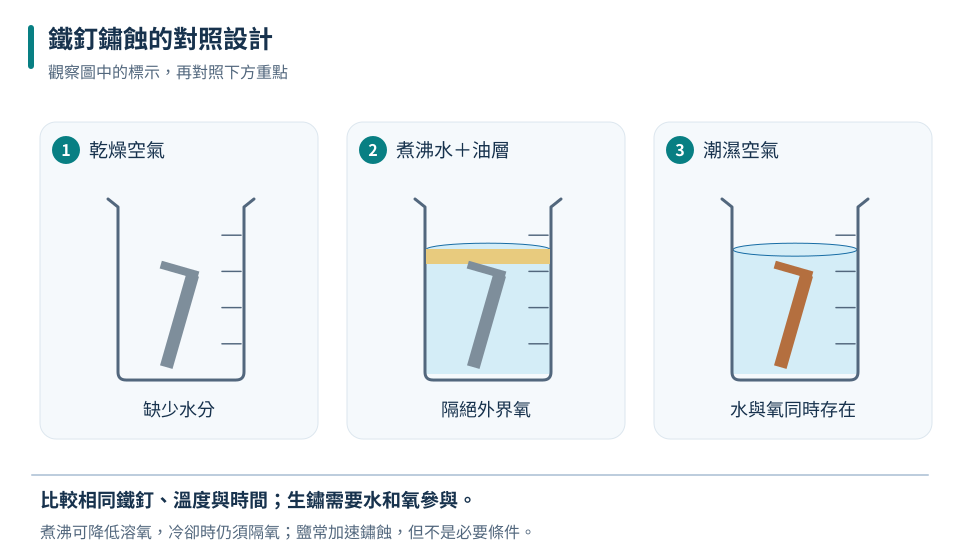
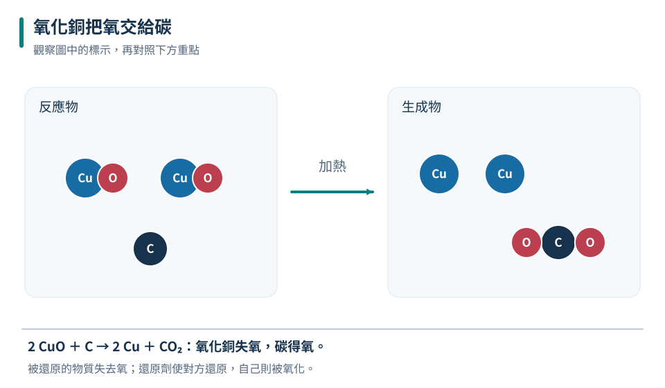
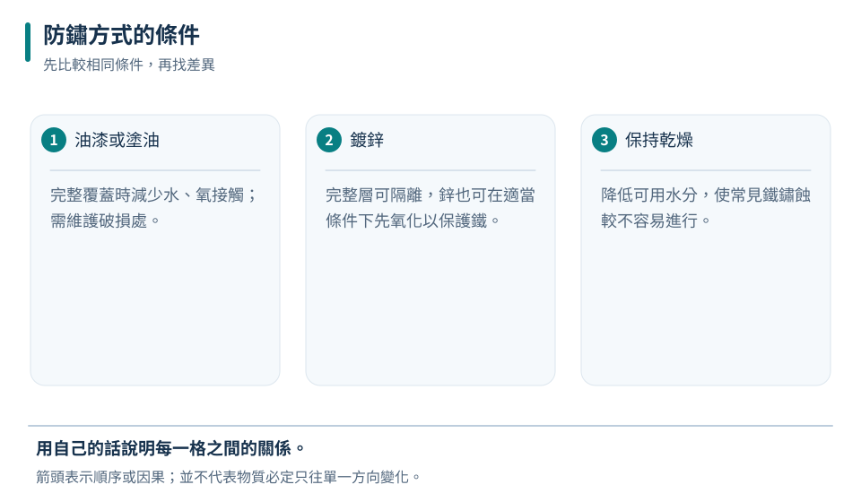

速率可以差很多
鐵鏽蝕與鎂燃燒都涉及氧化；是否看見火焰不是定義。
八下 · 化學 · 第 2 章
鐵為什麼會生鏽，氧化銅又怎樣變回銅？本章從氧在物質間的轉移理解氧化與還原，學會辨認被氧化、被還原的物質，以及氧化劑和還原劑。再把概念用到防鏽、燃燒與金屬取得，練習從對照實驗找出真正有效的條件。
先備概念：知道反應式與質量守恆、能區分元素和化合物
LEARN & EXPLAIN
本章先用氧的參與理解氧化：物質與氧結合可稱氧化，例如鎂燃燒生成氧化鎂、鐵逐漸生鏽。氧化不一定發光或快速，燃燒是快速氧化的一種表現，而鏽蝕常較慢。更廣義的氧化還原可用電子轉移說明，但本章題目以明確的氧轉移為判斷依據。
鐵在有水與氧的條件下容易生鏽；鹽水常使鏽蝕加快，但鹽不是生鏽的必要條件。要檢驗水和氧的作用，可以比較乾燥空氣、隔絕氧的水，以及同時有水與空氣的環境。對照實驗應盡量使用相同鐵釘、溫度和時間，避免把其他差異誤判成原因。
鐵鏽蝕與鎂燃燒都涉及氧化；是否看見火焰不是定義。
水和氧是本章鐵鏽蝕模型的重要條件；鹽常促進，但不一定要有鹽才會鏽。
| 環境 | 水 | 氧 | 同時間的預期 |
|---|---|---|---|
| 乾燥空氣 | 極少 | 有 | 不易明顯生鏽 |
| 煮沸後隔氧的水 | 有 | 極少 | 不易明顯生鏽 |
| 潮濕空氣 | 有 | 有 | 較易明顯生鏽 |

這是控制條件下的預期，不把「極少」誤寫成絕對不存在；實際操作由教師示範。
不能。仍需缺氧水的對照，才能區分水與氧各自的作用。
氧化不等於一定燃燒；沒有火焰的生鏽也是氧化現象。
LEARN & EXPLAIN
以氧轉移的觀點，物質失去氧稱為還原。例如氧化銅與足量碳在適當加熱條件下反應，氧化銅失去氧而變為銅；同時碳得到氧，形成二氧化碳。還原與氧化在同一反應中互相配合，不能只看生成了金屬，就忘記氧去了哪裡。
氧化劑使另一物質氧化，自己則被還原；還原劑使另一物質還原，自己則被氧化。在2CuO＋C→2Cu＋CO₂這個理想化反應中，CuO提供氧，是氧化劑；C奪取氧，是還原劑。名稱描述它對別人的作用，與它自己經歷的變化剛好要分開看。
失氧者被還原，得氧者被氧化；先判變化，再判試劑角色。
氧化劑自己被還原；還原劑自己被氧化，不能按名稱直覺相配。

反應需適當加熱；這裡依題示生成CO₂的反應討論，不作居家操作指示。
CuO被還原，也是氧化劑；H₂是還原劑，自己被氧化。
氧化劑不是「自己被氧化的物質」；要看它使另一物質發生什麼變化。
LEARN & EXPLAIN
防鏽可以從反應條件下手。塗油、油漆或完整塑膠層能減少鐵與水、氧接觸，但破損處仍可能鏽蝕。鍍鋅除了隔離，鋅也較容易被氧化，能在適當接觸和環境下優先反應以保護鐵。鍍錫的保護較依賴鍍層完整，破損後不能把錫當成與鋅相同的犧牲保護。
金屬取得也常用還原反應把氧化物中的氧移走，但不是所有金屬氧化物都能用碳在一般冶煉條件下還原。金屬對氧的活性差異會影響選用方法。燃燒安全同樣與氧供應有關：含碳燃料供氧不足可能生成一氧化碳，需保持設備與通風；一氧化碳不能靠氣味可靠辨認。
塗層隔離與較活潑金屬優先氧化，原理不同；破損時的效果也不同。
氧化物能否被另一物質還原，要看指定條件與相對活性，不能只憑都是金屬。

防鏽策略應對準形成鏽的條件，而不是只改變外觀。
刮痕破壞隔離層，所以容易先鏽；油漆並沒有改變鐵的元素身分。
防鏽塗層不是永久免維護；保護效果取決於材料、完整度與環境。
TRY, OBSERVE, EXPLAIN
REVIEW
鐵鏽蝕與鎂燃燒都涉及氧化；是否看見火焰不是定義。
回到這一節複習失氧者被還原，得氧者被氧化；先判變化，再判試劑角色。
回到這一節複習塗層隔離與較活潑金屬優先氧化，原理不同；破損時的效果也不同。
回到這一節複習CHAPTER TEST
先獨立作答，再看解析。中難與難為編者估計，尚未經學生實測校準。